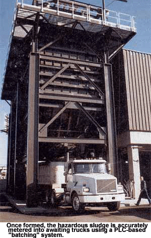
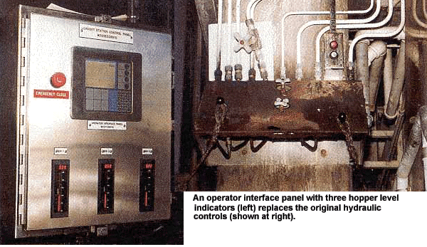
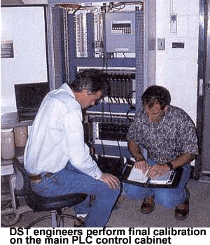

Municipal sludge, cake, dewatered
bio-solids, and sewage: "A rose by any other name..."--it's a sure thing
that such technical euphemisms for this nettlesome by-product of
civilization were farthest from The Bard's mind when he penned his most
famous floral reference.
But today, the treatment,
transportation, and disposal of municipal waste never is far from the
minds of those entrusted with keeping our environs clean and safe.
Regarding same, the East Bay Municipal Utility District (EBMUD) sewage
treatment plant for Oakland, Calif., was facing a possible "throughput
problem." That is, after the sewage was treated in the district's
multi-step digester system and dewatering centrifuge, the resulting cake
or sludge had to be quickly loaded into container trucks for
transportation to the district's customers. Otherwise, "inventory" might
accumulate. (Yes, there are customers for everything, even sludge. More
than 120,000 lb per day of Oakland's municipal by-product is purchased by
fertilizer manufacturers.)
A messy problem
To keep up with supply, each truck
transporting sludge from the treatment plant to the fertilizer plant had
to be loaded with as much as 50,000 lb of sludge in about three minutes.
This had to be done within a tolerance of ±1% because the city had to
charge its customers correctly and, as with any hazardous material, keep
certified records of how much went where. Furthermore, the system also had
to have a price tag in line with today's lean municipal budgets, thus
producing the classic engineering conundrum for the solution providers:
"You want a system that's fast, accurate, and cheap? Pick any
two."
The most difficult obstacle to
overcome in the process was filling the trucks quickly with ±1% accuracy
regardless of large fluctuations in the sludge's flow rates. These
"unmodelable" fluctuations were caused by viscosity changes due to batch
variants in sludge dehydration and temperature, and varying material
heights (i.e. head pressure) in the loading hoppers. Unlike the constant
relationship between head pressure and flow rates when dealing with
liquids, municipal sludge has varying densities and flow rates ranging
from that of dirt to thick soup.
The next most serious problem to
overcome was measuring real-time load-out status because the programmable
logic controller (PLC) would have no direct feedback indicating same. This
was because:
- Trucks would not be sitting on
scales during the loading process;
- Flowmeters wouldn't work in large
hoppers with variable load-out orifices, and
- As the hoppers dispensed their
contents, they would simultaneously be refilled, thus rendering simple
hopper net weight loss calculations--as an index of load-out
progress--meaningless.
Mechanical solution
Material Systems Engineers (MSE) (San
Rafael, Calif.), devised a hopper slide gate system to handle the
mechanics of this nasty dynamic control problem with speed, accuracy, and
budget in mind. MSE's system also had to have an expected life span of at
least 15 years.
To leverage the control system's capabilities, MSE uses a Diamond Seal slide gate with a diamond-shaped
orifice allowing full-bore flow rates to be quickly followed by tightly
metered low-flow rates. This is because the design's diamond-shaped
opening decreases and increases in size much more quickly than rectangular
configurations with similar actuator stroke lengths.
The control solution
MSE partnered with systems integrator,
DST Controls (Benicia, Calif.), to develop the model-free adaptive control
package required to accurately track, and control the dispatch of, this
inconsistent blend of liquid and solid hazardous
material.
Basic control requirements included
establishing communications between the district's Westinghouse
distributed control system (DCS) and DST's PLC system, and achieving the
load-out setpoints by integrating measured net hopper weight changes with
inferred hopper refill rates.
The control system also had to:
- Allow operator-entered truck identification information and loading instructions;
- Automatically enter truck tare weight;
- Time/date stamp each load-out cycle.
- Collect hopper load cell data and calculate load-out progress;
- Modulate diamond slide gates to hit load-out setpoints;
- Display load-out progress and customer identification information;
- Detect and report hopper overload alarm conditions;
- Monitor and regulate centrifuge out-flow valves and pumps; and
- Send transaction records to the Westinghouse DCS for accounting.
Major control system components
include a Modicon (North Andover, Mass.)
Quantum PLC, Panel Mateä Operator
Interface display screen with touch-pad, Kistler-Morse
(K-M, Bothell, Wa.) weight measurement system, and
Miltronics (Arlington, Tex.) radar level sensors. All
electronics are integrated into a single NEMA 4 cabinet. Reliability
concerns and installed base in the municipal environments were
instrumental in MSE's selection of Modicon as the PLC
platform.
Process avoids 'free
samples'
Treated sewage is partially de-watered
by the plant's centrifuge system. A system of 12 valves controlled by the
PLC then conveys the sludge to hoppers suspended above the truck loading
area.
In automatic mode the load-out
operator enters, via the touchpad, truck and customer identification
information and intended load weights. The touchpad inputs this
information to the PLC where it is integrated to effect slide-gate
operation. On initiation of the load-out cycle from the PLC, the slide
gate moves to its full open, or "course," position and initiates flow.
When 70% of the desired load is reached (approx. 35,000 lb in about 2
min), the PLC moves the gate to an "intermediate" position until 95% of
load-out is reached. The gate then closes to the "fine" position until
100% of the load-out weight (approx. 50,000 lb) has been completed. The
PLC then closes the gate, terminating load-out all in about three minutes
total.
The PLC determines gate positioning
as a function of the current weight of sludge loaded to the truck. This
real-time loaded-out weight is calculated from hopper weight measurements
and sludge flow into hoppers. These two measurements are scanned by the
PLC every second to maintain an accurate accounting of sludge loaded into
the truck.
When the operator initiates the
load-out sequence, the PLC takes a snapshot of the hopper weight at the
beginning of the sequence (i.e., hopper tare weight). The current total
hopper weight is continuously monitored as sludge is loaded into the
trucks. The net weight loaded into a truck at any given time is the
initial hopper (tare) weight minus the current hopper weight, plus the
totalized sludge flow into the hopper from the centrifuges since that
load-out began. Magnetic flowmeters at the centrifuge provide sludge-flow
amounts to the PLC.
The loaded-out net weight is then
used by the Modicon PLC for execution of its three primary control
functions:
- Automatic and evenly distributed
sludge load-out from the three loading hoppers;
- Automatic refilling of the three
hoppers; and
- Transmission of transaction data,
for accounting purposes, to the Westinghouse DCS.
Slide gates are actuated by
hydraulic cylinders controlled by the PLC and monitored by position
sensors which serve as inputs to the PLC.
To determine tare and current hopper
weights, each hopper is mounted on four K-M load cells, one under each
corner. The gross weight measurement is accurate to 0.1% of span (0-75,000
lb). The weight measurement system subtracts the hopper tare weight from
the actual hopper weight to determine the net sludge weight in the hopper
at any time.
As suggested, the system not only
has to load each truck quickly, accurately and economically but also
evenly. If a single 50,000 lb mound of "product" were piled in one part of
the truck, vehicle handling would be adversely effected and "free samples"
could be blown off the top of the cone as the truck speeds to its
destination, upsetting neighbors and regulators alike. Hence, each loading
platform consists of three overhead loading hoppers to evenly deposit the
loads in the trucks.
Optimizing the
process
Besides loading trucks properly, the
PLC must also keep each hopper sufficiently refilled to maintain loading efficiency. It does this by using hopper net-weight status to actuate the
12 valve system that modulates sludge transfer from the centrifugal
dehydrators to the loading hoppers. The hoppers are alternately filled to
a predetermined differential weight as compared to each
other.
The hopper with the lowest weight is
refilled first. When that hopper's net sludge weight exceeds the
differential, as compared to the previous highest hopper weight, the
filling sequence is redirected to the new lowest weight hopper and the
cycle continues until all three hoppers are full.
The load-out operator can control
the loading of sludge from the hoppers into trucks automatically or
manually from the touchpad station. In either case, the screen displays
net hopper weights, load out status, and customer identification
information.
To perform a manual load-out, the
operator turns a position switch wired to the PLC to effect the degree of
gate-open desired. Needless to say, care must be taken when exercising
control in this mode.
Upon load-out completion, a State of
California Department of Transportation-required bill of lading with truck
identification and load-out weight is printed by the system. The bill of
lading is then handed to the driver and checked for accuracy at an
independent truck scale by district personnel before leaving the
pant.
During original system calibration,
the loadout weight was periodically compared to a set of certified truck
scales. To date, the agreement between the truck scales and the weight
reported by the PLC has been consistently within 0.5%. This means trucks
keep rolling out from under loading gates fast enough to spare Oakland
that mother of all municipal waste problems--"accumulated
inventory."
|